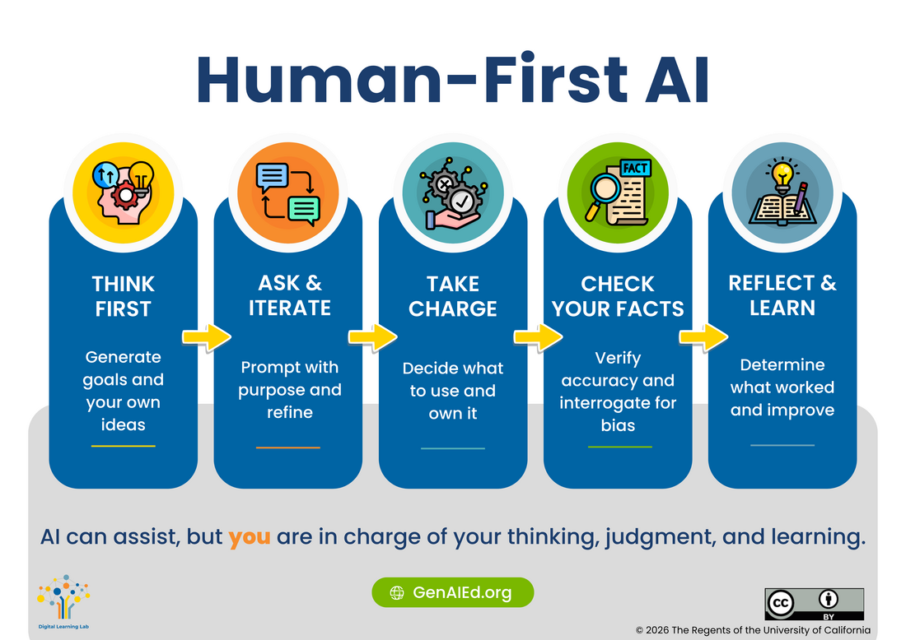

For educators
Explore practical guidance for using generative AI without offloading the thinking students need to practice.
Tate, T. P., Ritchie, D. R., & Warschauer, M. (2026). Generative AI as a Mediational Agent: Rethinking Learning in Sociocultural Theory.
Classroom-ready prompts, activities, assignments, and implementation guides
The September 2026 offering of AI in Higher Education was canceled.

Tamara Tate, PhD
Associate Director, Digital Learning Lab
University of California, Irvine
tatet@uci.edu
949.431.6540